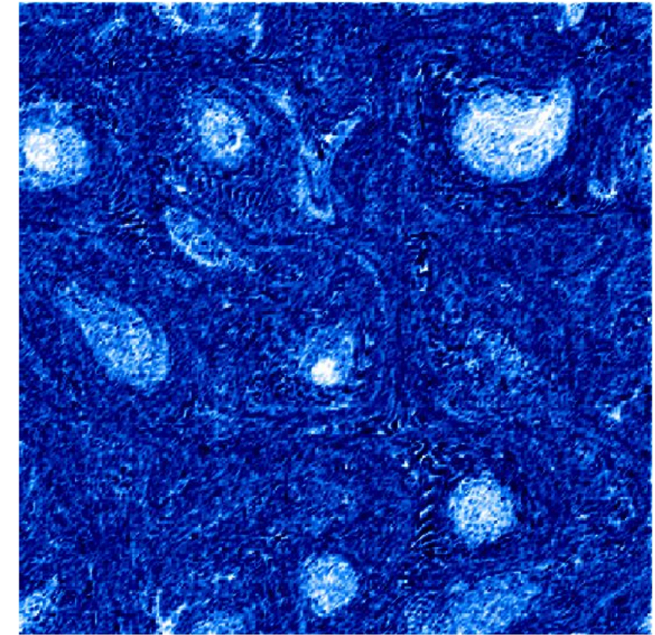

Entrainment animation 2D
Here is a animation of preferential concentration in a 2D planeThe vapor field is set as a constant at initial time, thus the fluctuation is caused by the evaporation of droplets.
| Vorticity | Vapor field | Number density |
 |
 |
 |
| magnitude of vorticity | number density |
|  |
CL = var/mean - 1
where var is the variance of number density in each grid cell, mean is the mean value of number density in grid cell. CL < 0 gives uniform distribution, while CL > 0 suggests preferential concentration. CL = 0 is the Poisson Point distribution, which should be approximately the initial condition.
| Clustering index | numdensity at 0s | number density at 40s |
 |